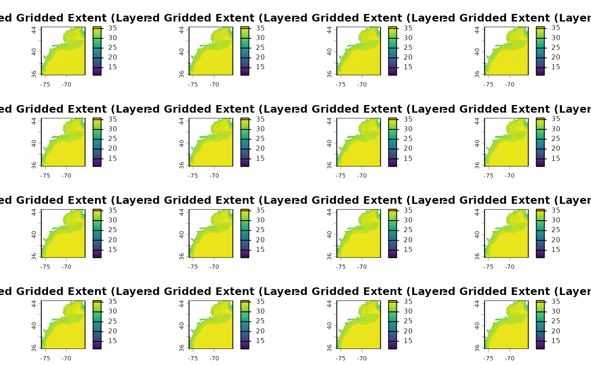
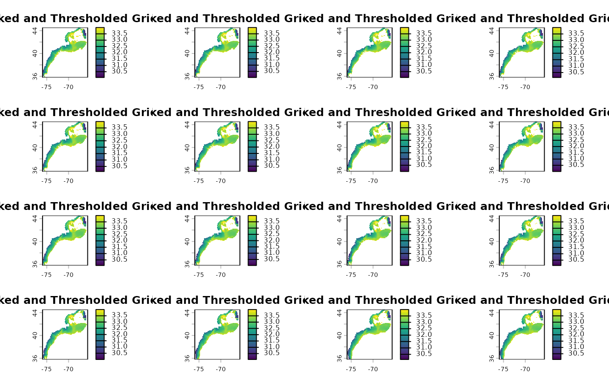
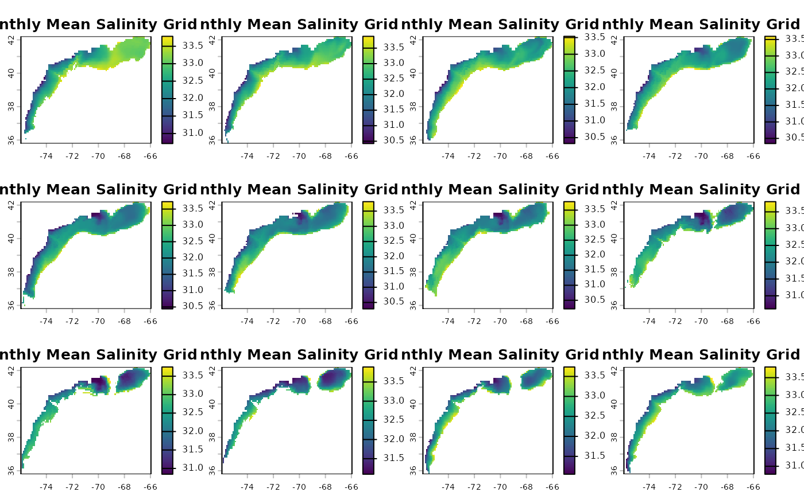
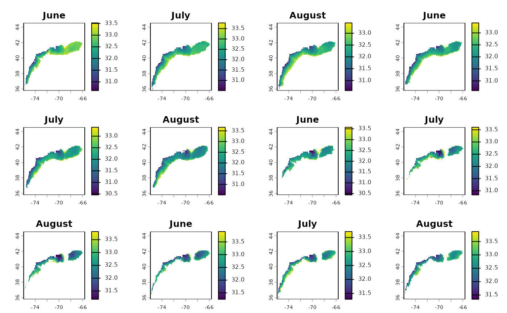
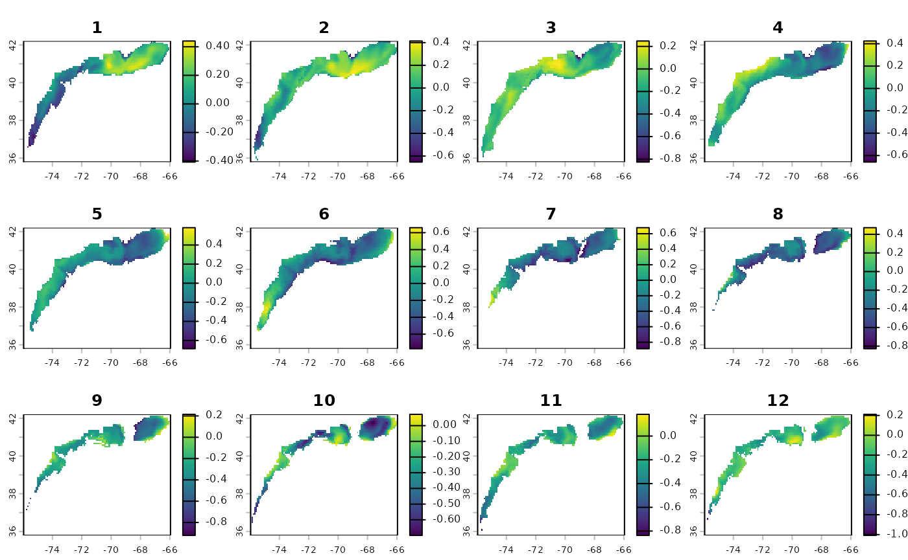

2D Gridded
2d_gridded.RmdPipeline Workflow: Gridded
The EDABUtilities package provides a robust,
spatially-explicit pipeline to process 2D gridded datasets (like
multi-layer NetCDF files). Unlike the Timeseries Pipeline
(_ts), which summarizes spatial zones into tabular data
frames, the Gridded Pipeline (_gridded) preserves the
spatial dimensions of your data throughout the entire analytical
workflow.
Every operation along this pipeline consumes a
SpatRaster (or NetCDF file path) and returns a modified
SpatRaster (or writes a NetCDF directly to disk). This is
essential for workflows where you need to map outputs, calculate
cell-by-cell metrics, or feed downstream spatial models.
This vignette demonstrates a 6-step progression:
Spatial Cropping (
crop_nc_2d): Limit the spatial boundaries of the input layers to the bounding box of your shapefile.Quality Masking (
mask_nc_2d): Clamp data values to a specific quality threshold and mask pixels outside your study area.Temporal Aggregation (
make_2d_summary_gridded): Aggregate daily layers into weekly, monthly, seasonal, or annual gridded summaries.Gridded Climatology (
make_2d_climatology_gridded): Combine multiple years of gridded summaries to construct a baseline spatial climatology.Gridded Anomaly Calculation (
make_2d_anomaly_gridded): Subtract the spatial baseline climatology from your gridded summaries to yield a map of cell-by-cell anomalies.Gridded Degree Day Calculation (
make_2d_degree_day_gridded): Calculate the number of days above or below a reference threshold for each cell in your gridded dataset.
Step 0: Setup and Define Parameters
First, we load the required packages and define our core parameters, including our study area shapefile (Ecological Production Units - EPUs) and our variable of interest (Bottom Salinity).
library(here)
#> Error in `library()`:
#> ! there is no package called 'here'
library(EDABUtilities)
library(terra)
#> terra 1.9.27
# Define reference boundaries and thresholds
epu.shp <- system.file("data", "EPU_NOESTUARIES.shp", package = "EDABUtilities")
var.name <- "BottomS"
min.S <- 30
max.S <- 34Step 1: Spatial Cropping
We crop the multi-layer input NetCDF files down to the bounding box of the shapefile. This reduces the footprint of the spatial grids in memory and increases processing speeds for all downstream steps.
data.crop <- crop_nc_2d(
data.in = c(
system.file("data", "GLORYS_daily_BottomSalinity_2019.nc", package = "EDABUtilities"),
system.file("data", "GLORYS_daily_BottomSalinity_2020.nc", package = "EDABUtilities")
),
shp.file = epu.shp,
var.name = var.name,
area.names = NA,
write.out = FALSE
)
#> Already standard format (-180:180)
#> Already standard format (-180:180)
# Plot the cropped daily spatial layer
terra::plot(data.crop[[1]], main = "Cropped Gridded Extent (Layer 1)")
Step 2: Masking and Quality Control
Next, we filter out any values that fall outside our acceptable
bottom salinity threshold (30 to 34 PSU) and set pixels that reside
outside of the precise EPU polygon boundary to NA.
data.mask <- mask_nc_2d(
data.in = data.crop,
var.name = var.name,
min.value = min.S,
max.value = max.S,
shp.file = epu.shp,
binary = FALSE,
area.names = NA,
write.out = FALSE
)
# Plot the masked result
terra::plot(data.mask[[1]], main = "Masked and Thresholded Grid")
Step 3: Temporal Aggregation to Gridded Summaries
Instead of converting to tabular forms, we use
make_2d_summary_gridded to aggregate our daily timesteps
into monthly spatial averages. We filter the results specifically to the
Georges Bank (GB) and Mid-Atlantic Bight (MAB) regions.
data.summary <- make_2d_summary_gridded(
data.in = data.mask,
write.out = FALSE,
file.time = "annual",
shp.file = epu.shp,
var.name = var.name,
agg.time = "months",
statistics = "mean",
area.names = c("MAB", "GB")
)
#> Already standard format (-180:180)
#> Already standard format (-180:180)
#Pull just the top layer from data.summary for plotting
plot.data = terra::rast(data.summary[[1]])
# Plot the monthly gridded summary
terra::plot(plot.data, main = "Monthly Mean Salinity Grid")
Step 4: Construct Gridded Climatology Baseline
Now we establish a spatial baseline reference. By using
make_2d_climatology_gridded, we calculate the cell-by-cell
average specifically for the summer months (June through August) across
the multi-year input layers. This returns a single climatological
SpatRaster layer.
data.clim <- make_2d_climatology_gridded(
data.in = data.mask,
write.out = FALSE,
shp.file = epu.shp,
var.name = var.name,
area.names = c("MAB", "GB"),
start.time = 1,
stop.time = 12,
agg.time = "months",
statistic = "mean"
)
#> Already standard format (-180:180)
#> Already standard format (-180:180)
# Plot the summer baseline climatology
terra::plot(data.clim[[1]], main = month.name[6:8])
## Step 5: Calculate Cell-by-Cell Spatial AnomaliesFinally, we calculate the spatial anomaly map. This is completed by
subtracting the climatological SpatRaster from our
summarized SpatRaster using
make_2d_anomaly_gridded. Each pixel value in the resulting
raster represents the departure from the summer climatology.
data.anom <- make_2d_anomaly_gridded(
data.in = data.summary,
climatology = data.clim,
shp.file = epu.shp,
var.name = var.name,
area.names = c("MAB", "GB"),
write.out = FALSE
)
#> Already standard format (-180:180)
#> Already standard format (-180:180)
# Plot the anomaly map for the first processing period
terra::plot(data.anom[[1]])
Step 6: Gridded Degree Days
For studies evaluating threshold-based biological stressors (such as
spatial exposure to extreme bottom conditions), you can use
make_2d_deg_day_gridded_nc. This function computes degree
days, threshold counts, or consecutive threshold exceedances on a
cell-by-cell basis.
Here, we calculate the gridded total number of days where Bottom
Salinity was above 33 within the Georges Bank and
Mid-Atlantic Bight regions.
data.nd <- make_2d_deg_day_gridded_nc(
data.in = data.mask,
write.out = FALSE,
shp.file = epu.shp,
var.name = "BottomS",
statistic = "nd",
ref.value = 33,
type = "above",
area.names = c("MAB", "GB")
)
#> Error in `make_2d_deg_day_gridded_nc()`:
#> ! could not find function "make_2d_deg_day_gridded_nc"
# Plot the spatial threshold count grid
terra::plot(data.nd[[1]], main = "Gridded Days with Salinity > 33")
#> Error in `h()`:
#> ! error in evaluating the argument 'x' in selecting a method for function 'plot': object 'data.nd' not found